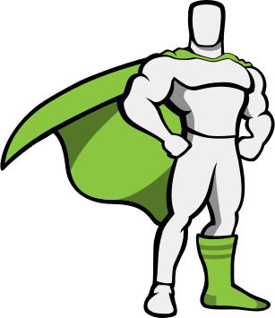

GSAP

GSAP est une bibliothèque d'animation JavaScript standard de
GreenSock qui vous permet de créer des animations de haute
performance qui fonctionnent dans tous les principaux navigateurs.
Se mini site utilise GSAP !
La documentation